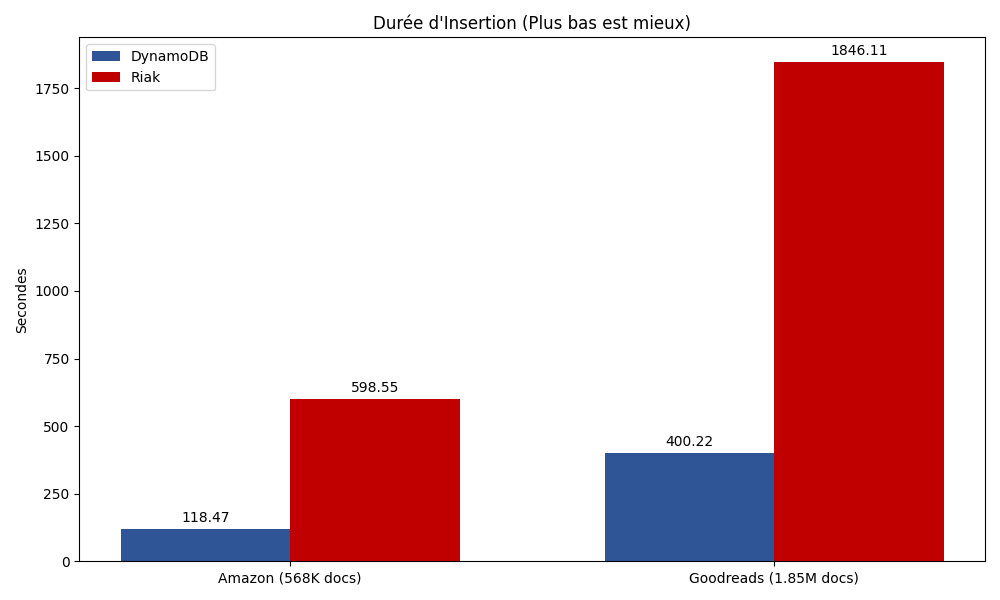
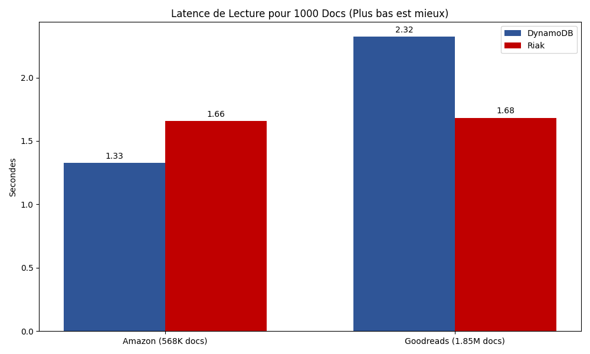
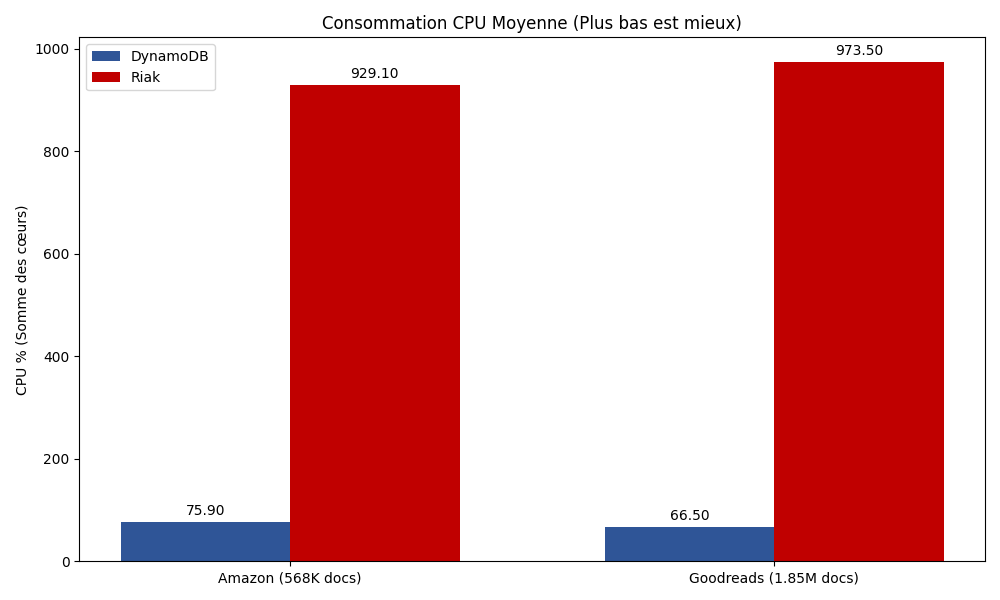
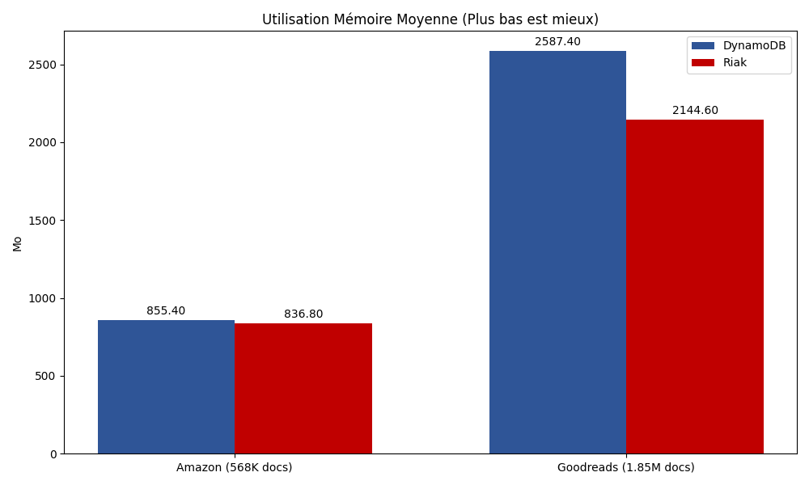

Comparaison de DynamoDB (Local) vs Riak KV
Cette étude évalue les performances et l'efficacité des ressources de deux bases de données Clé-Valeur (KV) de premier plan : Amazon DynamoDB (exécuté localement via Docker) et Riak KV.
DynamoDB est une base de données NoSQL clé-valeur entièrement gérée et sans serveur, conçue pour exécuter des applications haute performance à n'importe quelle échelle. Pour ce benchmark, nous avons utilisé dynamodb-local, une version client de DynamoDB qui imite le service web, permettant le développement et les tests locaux.
Riak KV est un magasin clé-valeur NoSQL distribué qui offre une haute disponibilité, une tolérance aux pannes, une simplicité opérationnelle et une évolutivité. Il est construit sur la machine virtuelle Erlang et est connu pour son architecture sans maître (masterless).
Nous avons utilisé deux jeux de données réels de tailles variées pour tester les bases de données sous différentes charges :
Avis Amazon (568K Documents)
amazon_reviews.csvAvis Goodreads (1.85M Documents)
goodreads_reviews_mystery_thriller_crime.jsonLe processus de benchmark pour chaque base de données et jeu de données comprenait les étapes séquentielles suivantes :
DynamoDB a démontré un débit d'écriture significativement plus élevé par rapport à Riak KV.
Analyse : DynamoDB est environ 5x plus rapide que Riak pour les opérations d'écriture dans cette configuration Docker locale. Le coût de l'API HTTP de Riak et sa nature distribuée (même dans un nœud unique) contribuent probablement à la latence plus élevée par opération par rapport à l'implémentation légère de DynamoDB Local.
| Opération | DynamoDB | Riak KV | Écart |
|---|---|---|---|
| Amazon (568K) | 118.5s | 598.6s | DynamoDB x5.0 |
| Goodreads (1.85M) | 400.2s | 1846.1s | DynamoDB x4.6 |
| Débit Max | 4.47 Mo/s | 0.97 Mo/s | DynamoDB x4.6 |

La latence de lecture pour les recherches ponctuelles aléatoires était comparable entre les deux systèmes, avec un léger avantage pour DynamoDB.
Analyse : Les deux bases de données fonctionnent exceptionnellement bien pour les recherches ponctuelles (récupération clé-valeur), qui sont leur cas d'utilisation principal. Les différences ici sont négligeables (millisecondes par requête).
| Opération | DynamoDB | Riak KV | Observation |
|---|---|---|---|
| Lecture Amazon | 1.33s | 1.66s | Similaire |
| Lecture Goodreads | 2.32s | 1.68s | Riak légèrement plus rapide |

Un contraste frappant a été observé dans l'efficacité des ressources.
Analyse : Riak est extrêmement gourmand en CPU, utilisant presque toute la puissance de calcul disponible (10+ cœurs) pour atteindre 1/5ème du débit de DynamoDB. Cela suggère un coût élevé par opération dans l'architecture Erlang VM/Riak pour cette charge de travail spécifique.
| Métrique | DynamoDB | Riak KV | Observation |
|---|---|---|---|
| CPU Moyen | 66% - 76% | 929% - 973% | Riak sature le CPU |
| RAM Moyenne (Mo) | 855 - 2587 | 836 - 2144 | Similaire, mais Riak instable sans limites |


Au cours de cette étude, plusieurs défis techniques ont dû être surmontés pour obtenir des benchmarks fiables, particulièrement avec Riak :
Crash de Riak sur les Gros Volumes :
Goulot d'Étranglement HTTP :
ThreadPoolExecutor (12 workers) et des connexions persistantes (requests.Session), doublant ainsi le débit (~1 000 ops/s).Erreurs de Connexion (Connection Reset) :
Monitoring des Ressources Défaillant :
cpu_avg vs container_cpu_avg).kv_benchmark_base.py pour capturer correctement les métriques Docker.Dans cette étude de benchmark locale, DynamoDB Local a surpassé Riak KV sur toutes les métriques intensives en écriture tout en consommant beaucoup moins de ressources CPU.
Pour un environnement de développement local ou des besoins haute performance sur un nœud unique, DynamoDB Local est le gagnant incontestable. Les avantages de Riak en matière de tolérance aux pannes distribuée et d'architecture en anneau ne deviendraient probablement apparents que dans un scénario de cluster multi-nœuds, ce qui dépassait le cadre de cette étude.